21 Graph and Network Models
Prerequisites: This chapter builds on foundation model concepts from Part 3 (especially protein language models in Chapter 15 and DNA models in Chapter 14) and attention mechanisms from Chapter 7. Familiarity with single-cell representations (Chapter 19) is helpful but not required.
Learning Objectives: After completing this chapter, you should be able to:
- Explain why graph neural networks complement rather than replace sequence-based foundation models
- Describe the message passing framework and how it propagates information across network neighborhoods
- Compare the design tradeoffs among GCN, GraphSAGE, GAT, and graph transformer architectures
- Design an integration strategy combining foundation model embeddings with GNN layers for a given biological task
- Evaluate the limitations of network-based predictions, including ascertainment bias and causality concerns
Estimated Reading Time: 45-55 minutes
Graph neural networks are not alternatives to foundation models; they are consumers of them. Foundation models produce rich representations of individual biological entities: protein language models encode evolutionary constraint and structural propensity (Chapter 15), DNA models capture regulatory grammar (Chapter 16), RNA models represent transcript-level features (Chapter 18). These representations are powerful but operate on isolated sequences. A protein embedding captures what ESM learned about that protein’s sequence; it says nothing about which other proteins it binds, which pathways it participates in, or which disease phenotypes result from its disruption. Graph neural networks operate at a higher level of abstraction, taking foundation model representations as node features and learning to propagate information across relational structure. The combination yields capabilities that neither approach achieves alone.
This architectural relationship reflects a biological reality: organisms are not collections of independent molecules but systems of interacting components. A transcription factor affects its target genes through regulatory edges. Proteins assemble into functional complexes through physical binding. Signaling cascades propagate perturbations across cellular networks. These relationships exist at a level of abstraction above sequence, requiring a different mathematical framework to represent. Graphs provide precisely this framework. In a protein-protein interaction network, proteins become nodes and physical binding creates edges. In a gene regulatory network, directed edges connect transcription factors to their targets. In spatial transcriptomics data, cells become nodes with edges capturing physical proximity. Each graph encodes relational structure that sequence models cannot directly capture.
Think of the relationship between foundation models and GNNs as a division of labor: foundation models answer “What can this protein do?” based on its sequence, while GNNs answer “What does this protein do in context?” based on its network neighborhood. Neither question subsumes the other. A transcription factor’s DNA-binding properties (captured by sequence models) matter, but so does which genes it actually regulates in a given cell type (captured by network structure).
The practical implications are substantial. Disease gene prioritization leverages the observation that genes causing similar diseases cluster in network neighborhoods. A GNN can learn to propagate disease signals across protein interaction networks, but effectiveness depends critically on node feature quality. When those features come from protein language models encoding evolutionary constraint and structural propensity, the GNN gains access to sequence-level biological knowledge unavailable from simpler features like expression levels alone. Drug-target interaction prediction similarly benefits: ESM embeddings capture what makes a protein druggable, while network context reveals which targets sit in therapeutically relevant pathways.
21.1 Biological Networks and Data Resources
Graph neural networks can only learn from relationships encoded in their input graphs. The choice of network, its source, and its inherent biases determine what a model can discover and what it will miss. Understanding the landscape of available biological networks, their construction methods, and their systematic limitations is therefore prerequisite to effective graph-based modeling.
21.1.1 Landscape of Biological Graphs
Before examining graph neural network architectures, it is essential to understand what biological networks exist and where they come from. The choice of network fundamentally shapes what a model can learn, and the biases inherent in network construction propagate through all downstream analyses.
Physical associations between proteins constitute perhaps the most widely used network type for GNN applications. Major databases include STRING, which integrates experimental data with computational predictions and text mining to assign confidence scores to interactions; BioGRID, which focuses on curated experimental interactions; and IntAct, which provides detailed interaction metadata from direct molecular experiments. These protein-protein interaction networks are incomplete (current estimates suggest only 20-30% of human PPIs are catalogued) and biased toward well-studied proteins in well-characterized pathways (szklarczyk2023string?; oughtred2021biogrid?; orchard2014intact?; venkatesan2009protein?; hart2006completeness?). A gene involved in cancer or a common disease may have hundreds of documented interactions, while an uncharacterized protein in a specialized tissue may have none, not because it lacks interactions but because no one has looked.
Transcriptional control relationships require a different network structure. Unlike PPIs, gene regulatory networks are inherently directed: a transcription factor activates or represses its targets, not vice versa. Sources include chromatin immunoprecipitation sequencing (ChIP-seq) experiments that identify transcription factor binding sites, chromatin accessibility data (assay for transposase-accessible chromatin sequencing (ATAC-seq), DNase-seq) that reveals active regulatory regions, and chromosome conformation capture (Hi-C) that maps enhancer-promoter contacts (Chapter 20). Databases like ENCODE and the Roadmap Epigenomics Project provide regulatory annotations across cell types, though coverage varies dramatically by tissue (Chapter 2). Computational methods infer regulatory edges from expression correlations or sequence motifs, but such predictions contain substantial false positives and miss context-specific interactions.
Organized biochemical knowledge takes yet another form. KEGG, Reactome, and WikiPathways curate reactions, enzymatic steps, and signaling cascades into hierarchical pathway and metabolic networks where nodes can represent genes, proteins, metabolites, or abstract pathway concepts. These networks encode decades of molecular biology knowledge but reflect historical research priorities: metabolism and signal transduction are well-characterized, while more recently discovered processes like autophagy or RNA modification have sparser coverage.
Beyond molecular interactions, relationships among genes, diseases, drugs, phenotypes, and other biomedical entities require heterogeneous representations. Unlike protein interaction networks, which contain a single node type and edge type, knowledge graphs are inherently heterogeneous: nodes represent diverse entity classes, and edges capture semantically distinct relationship types. This heterogeneity enables richer reasoning but demands architectures capable of handling multiple node and edge embeddings.
Several large-scale biomedical knowledge graphs have become standard resources. Hetionet integrates 47,031 nodes across 11 types (genes, diseases, compounds, anatomies, and others) with 2.25 million edges spanning 24 relationship types, providing a comprehensive substrate for computational drug repurposing (himmelstein2017systematic?). The Unified Medical Language System (UMLS) aggregates over 200 biomedical vocabularies into a metathesaurus linking millions of concepts through hierarchical and associative relationships. PrimeKG consolidates 17 biological databases into a precision medicine knowledge graph with over 4 million relationships connecting diseases, drugs, genes, pathways, and phenotypes, explicitly designed for machine learning applications (chandak2023primekg?).
Disease-gene association databases provide critical edges for clinical applications. DisGeNET curates over one million gene-disease associations from expert-reviewed sources, GWAS catalogs (Chapter 3), and text mining, assigning evidence scores that enable confidence-based filtering (pinero2020disgenet?). OMIM (Online Mendelian Inheritance in Man) provides authoritative curation of Mendelian disease genes, while OrphaNet focuses on rare diseases with detailed phenotypic annotations (Chapter 28). The Clinical Genome Resource (ClinGen) adds expert-reviewed gene-disease validity assessments using standardized evidence frameworks.
Drug-centric resources complete the translational picture. DrugBank provides comprehensive drug-target annotations with mechanism and pharmacology details. ChEMBL aggregates bioactivity data from medicinal chemistry literature, linking compounds to protein targets through binding affinity measurements. The Drug Gene Interaction Database (DGIdb) consolidates druggable gene categories and known interactions to support target prioritization (Chapter 30).
| Network Type | Example Databases | Node Types | Edge Semantics | Key Limitation |
|---|---|---|---|---|
| Protein-Protein Interaction | STRING, BioGRID, IntAct | Proteins | Physical binding, co-complex | 20-30% coverage; study bias |
| Gene Regulatory | ENCODE, Roadmap, JASPAR | TFs, genes, enhancers | Activation/repression (directed) | Cell-type specificity |
| Pathway/Metabolic | KEGG, Reactome, WikiPathways | Genes, metabolites, reactions | Enzymatic, signaling | Historical research bias |
| Knowledge Graph | Hetionet, PrimeKG, UMLS | Multiple entity types | Multiple relationship types | Integration quality varies |
| Spatial/Cell-Cell | Spatial transcriptomics data | Cells, spots | Proximity, communication | Emerging; sparse coverage |
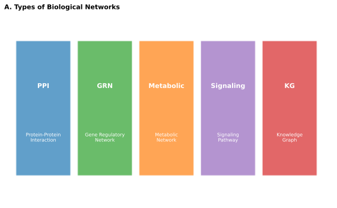
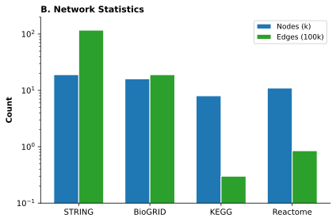


The power of knowledge graphs lies in their support for multi-hop reasoning. A query asking whether a drug might treat a disease can traverse multiple edge types: drug inhibits protein A, protein A interacts with protein B, protein B is implicated in disease. Each hop contributes evidence, and the combination of paths provides signal that no single edge contains. Graph neural networks learn to aggregate across such paths, weighting different relationship types and path lengths according to their predictive value for specific tasks.
Spatially resolved transcriptomics and imaging data give rise to graphs capturing tissue organization invisible to bulk or even single-cell measurements (Chapter 19). In these spatial and cell-cell interaction graphs, nodes represent cells or spatial locations, while edges encode physical proximity or inferred ligand-receptor communication. Such graphs enable questions about how spatial context influences cell behavior.
Consider a protein that has no documented interactions in STRING or BioGRID. Does this mean it truly has no binding partners? What factors might explain why some proteins have hundreds of documented interactions while others have none? How might this asymmetry affect a GNN trained on such networks?
21.1.2 Biases and Limitations
All biological networks share systematic biases that affect downstream modeling. Well-studied genes appear as highly connected hubs not necessarily because they have more interactions but because researchers have investigated them more thoroughly. This ascertainment bias means that GNNs trained on network structure may primarily learn to propagate signals toward well-characterized genes, potentially missing novel biology in peripheral network regions.
Network incompleteness creates particular challenges for message passing algorithms. If a critical interaction is missing, information cannot flow across that gap. If a spurious interaction is present, noise propagates where it should not. These issues are especially acute for less-studied organisms, tissues, or disease contexts where network coverage is sparse.
The distinction between physical and functional associations matters for interpretation. A protein-protein interaction might represent stable complex membership, transient signaling, or indirect association through shared binding partners. Different edge types may warrant different treatment by graph models, but many databases conflate these categories or provide insufficient metadata to distinguish them.
21.2 Graph Neural Network Fundamentals
The mathematical machinery underlying graph neural networks differs fundamentally from the architectures examined in previous chapters. Where convolutional and transformer models operate on regular structures (sequences, grids), GNNs must handle irregular topology with variable-degree nodes, no inherent ordering, and arbitrary connectivity (Chapter 6, Chapter 7). This section develops the message passing framework that addresses these challenges, then surveys the canonical architectures that have become standard tools for biological applications.
21.2.1 Message Passing Principles
The challenge of learning from graph-structured data lies in the irregular topology: unlike images (regular grids) or sequences (linear chains), graphs have variable-degree nodes, no inherent ordering, and complex connectivity patterns. Classical approaches computed hand-crafted features such as degree centrality, clustering coefficients, or shortest path statistics, then fed these to standard machine learning models. Such features capture useful properties but cannot adapt to task-specific patterns.
Message passing provides a learnable alternative. The core intuition is local information exchange: each node should update its representation based on what its neighbors know. By iterating this process across multiple layers, information propagates across the graph, allowing nodes to incorporate signals from increasingly distant parts of the network.
Think of message passing as a controlled diffusion process. Just as heat diffuses from hot regions to cold ones, information in a GNN flows from nodes to their neighbors. After one layer, each node knows about its immediate neighbors. After two layers, it knows about neighbors of neighbors. After L layers, information has spread across L-hop neighborhoods. The learned weights control how information mixes, not just that it spreads.
Formally, at layer \(\ell\), each node \(i\) maintains a hidden state \(\mathbf{h}_i^{(\ell)}\). A message passing layer computes, for each edge from neighbor \(j\) to node \(i\), a message:
\[ \mathbf{m}_{ij}^{(\ell)} = \phi_m\left(\mathbf{h}_i^{(\ell)}, \mathbf{h}_j^{(\ell)}, \mathbf{e}_{ij}\right) \]
where \(\phi_m\) is a learned function and \(\mathbf{e}_{ij}\) represents edge features. The node then aggregates messages from all neighbors and updates its state:
\[ \mathbf{h}_i^{(\ell+1)} = \phi_h\left(\mathbf{h}_i^{(\ell)}, \bigoplus_{j \in \mathcal{N}(i)} \mathbf{m}_{ij}^{(\ell)}\right) \]
where \(\mathcal{N}(i)\) denotes neighbors of node \(i\) and \(\bigoplus\) is a permutation-invariant aggregation (sum, mean, max, or attention-weighted combination). The aggregation must be permutation-invariant because neighbors have no inherent ordering.
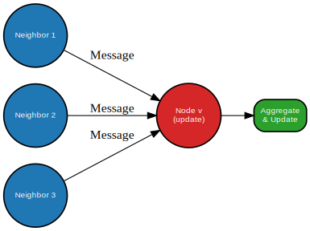
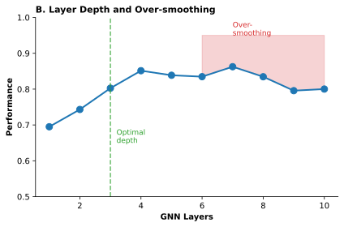


After \(L\) layers, a node’s representation incorporates information from all nodes within \(L\) hops. For biological networks, this means a gene’s learned embedding can reflect not only its own features but signals from interaction partners, their partners, and so on, capturing pathway-level and module-level context.
Before reading further, test your understanding of message passing:
- If a GNN has 3 message passing layers, how many hops away can information travel from any given node?
- Why must the aggregation function be permutation-invariant?
- What happens to node representations if you stack many message passing layers without any mechanism to prevent it?
Answers: (1) 3 hops; (2) Because graph neighbors have no inherent ordering, unlike sequence positions; (3) They converge (over-smoothing), losing discriminative signal.
21.2.2 Canonical Architectures
Several GNN architectures have become standard tools for biological applications, each with distinct design choices that reflect different tradeoffs between computational efficiency, expressive power, and scalability.
The simplest approach performs normalized neighborhood averaging followed by linear transformation and nonlinearity. Graph convolutional networks (GCN) are computationally efficient and conceptually straightforward but suffer from over-smoothing when stacked deeply: repeated averaging causes node representations to converge, losing the discriminative signal that distinguishes different network positions (li2018deeper?; oono2019graph?).
The over-smoothing problem is subtle but critical. Intuitively, if you repeatedly average a node’s representation with its neighbors, eventually all nodes in a connected component converge to similar representations. This means deeper GNNs are not always better. In practice, most GNNs use only 2-4 layers. Understanding when and why to limit depth is essential for effective GNN design.
Scalability to large graphs requires a different strategy. GraphSAGE learns aggregation functions that operate on sampled neighborhoods rather than the full neighbor set (hamilton2017inductive?). This enables mini-batch training on large graphs and provides inductive capability: the model can generate embeddings for nodes not seen during training by applying learned aggregators to their neighborhoods. For biological networks that grow as new genes are characterized, this generalization is valuable.
When some neighbors matter more than others, attention-weighted aggregation provides a learnable solution. Graph attention networks (GAT) compute attention scores between each node and its neighbors, allowing the model to focus on the most informative interactions (velickovic2018graph?). This is analogous to attention in transformers but operates over graph neighborhoods rather than sequence positions (Chapter 7).
Finally, the boundary between sequence and graph models blurs when transformer architectures extend to graphs. Graph transformers replace local message passing with structured or global attention. Some variants attend over all node pairs with positional encodings derived from graph structure (shortest paths, Laplacian eigenvectors); others restrict attention to k-hop neighborhoods (ying2021graphormer?; dwivedi2021graph?). These architectures potentially capture long-range dependencies that multi-layer message passing struggles to propagate.
| Architecture | Aggregation Method | Scalability | Inductive? | Key Strength | Key Limitation |
|---|---|---|---|---|---|
| GCN | Normalized mean | Limited (full-batch) | No | Simple, efficient | Over-smoothing with depth |
| GraphSAGE | Sampled aggregators | High (mini-batch) | Yes | Scales to large graphs | Sampling variance |
| GAT | Attention-weighted | Moderate | Yes | Learns edge importance | Quadratic in neighbors |
| Graph Transformer | Global/structured attention | Variable | Yes | Long-range dependencies | Computational cost |
The expressiveness of GNNs is bounded by their ability to distinguish different graph structures. Theoretical analysis connects standard message passing to the Weisfeiler-Lehman graph isomorphism test, revealing that certain graph structures remain indistinguishable regardless of the number of layers (xu2019how?; morris2019weisfeiler?). For most biological applications, this theoretical limitation is less constraining than practical issues of data quality, training efficiency, and interpretability (Chapter 25).
21.3 Foundation Model Embeddings as Node Features
The power of combining foundation models with graph neural networks lies in their complementary strengths. Foundation models extract rich biological information from sequence, but they operate on isolated entities without relational context. Graph neural networks reason over relationships, but they require informative node features to propagate meaningful signal. This section examines how to integrate these approaches effectively, from the architectural principle underlying the combination to practical patterns for implementation.
21.3.1 Integration Principle
The central architectural insight for genomic graph learning is that foundation models and graph neural networks operate at complementary levels of abstraction. Sequence-based foundation models excel at extracting biological information from linear sequences: ESM-2 learns evolutionary constraints and structural propensities from protein sequences (Chapter 15); DNABERT and its successors capture regulatory motifs and sequence grammar (Chapter 14); single-cell foundation models like scGPT learn cell state representations from expression profiles (Chapter 19). These representations encode rich biological knowledge but operate on individual entities without explicit relational information. The principles of feature extraction from pretrained models, which underpin this integration pattern, are developed in Section 9.3.
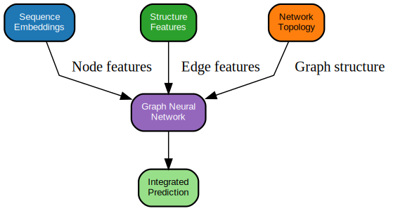
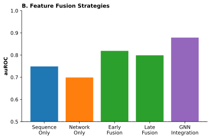


Graph neural networks excel at learning from relational structure but require informative node features to propagate. When node features are uninformative (simple one-hot encodings or scalar expression values), message passing can only learn from network topology. When node features carry substantial biological signal, message passing can refine and contextualize that information based on network position.
Combining these approaches follows a natural two-stage pattern. First, apply a foundation model to each entity in the graph to generate initial node embeddings. For a protein-protein interaction network, run ESM-2 on each protein sequence; for a gene regulatory network, use DNA embeddings for regulatory elements and protein embeddings for transcription factors; for a cell graph, apply scGPT to generate cell state representations. Second, train a GNN on these embeddings using the biological graph structure, allowing message passing to integrate entity-level representations with relational context.
This combination yields capabilities that neither component achieves alone. The foundation model provides rich, transferable features that would require massive labeled datasets to learn from scratch. The GNN provides relational reasoning that sequence models cannot perform. A protein’s druggability depends both on intrinsic properties (binding pocket geometry, expression pattern) that ESM captures and on network context (pathway position, interaction partners) that the GNN integrates.
Imagine you are building a model to predict which genes are essential for cancer cell survival. You have: - ESM-2 embeddings for each protein - A protein-protein interaction network from STRING - CRISPR knockout screens identifying essential genes in 10 cancer cell lines
Sketch out your approach. Would you freeze the ESM-2 embeddings or fine-tune them? How many GNN layers would you use? What might go wrong if you only used the network structure without the sequence embeddings?
21.3.2 Practical Integration Patterns
Several integration patterns have emerged in practice, each suited to different constraints and objectives. The simplest approach freezes foundation model weights and treats embeddings as fixed features, training only the GNN layers. This is computationally efficient and prevents catastrophic forgetting of pretrained knowledge but limits the model’s ability to adapt representations to the specific task (Chapter 9).
When sufficient task-specific data is available, allowing gradients to flow through both the GNN and (parts of) the foundation model enables end-to-end optimization. This joint fine-tuning typically requires careful learning rate scheduling, with smaller updates to foundation model parameters and larger updates to GNN layers. The approach can improve performance but risks overfitting and requires substantially more computation.
A middle ground inserts small trainable modules between foundation model layers or at the interface between foundation model outputs and GNN inputs. Adapter-based integration provides task adaptation with modest parameter overhead, avoiding full fine-tuning costs while retaining flexibility (Chapter 9).
The granularity of representations also offers flexibility. For proteins, one might extract both per-residue embeddings (capturing local structure) and sequence-level embeddings (capturing global properties), concatenating these as node features. For regulatory networks, one might combine nucleotide-level DNA embeddings with region-level chromatin accessibility predictions. This multi-scale integration uses foundation model representations at multiple granularities to capture different aspects of biological function.
Start simple: Begin with frozen embeddings and a 2-layer GNN. This establishes a strong baseline with minimal hyperparameter tuning.
Add complexity when justified: If frozen embeddings underperform and you have substantial labeled data (thousands of examples), try adapter-based integration before full fine-tuning.
Monitor for overfitting: Watch the gap between training and validation performance. Joint fine-tuning on small datasets often memorizes rather than generalizes.
Consider compute budget: Pre-computing embeddings for all nodes once is much cheaper than computing them on-the-fly during training. For large graphs, this can reduce training time by 10-100x.
The choice of integration pattern depends on data availability, computational resources, and the degree of distribution shift between foundation model pretraining and the target application (Chapter 12). For well-characterized systems with substantial labeled data, joint fine-tuning may be warranted. For novel organisms or rare diseases with limited labels, frozen embeddings with simple GNN layers often generalize better.
21.3.3 Evidence for the Integration Benefit
Empirical studies consistently demonstrate that foundation model embeddings improve GNN performance on biological tasks. In protein function prediction, ESM embeddings combined with PPI network GNNs substantially outperform either sequence-only or network-only baselines (lin2025gobeacon?). The improvement is particularly pronounced for proteins with few characterized interaction partners, where network structure alone provides limited signal but sequence features carry evolutionary information.
For disease gene prioritization, combining DNA and protein foundation model embeddings with multi-relational GNNs over heterogeneous biological networks improves ranking of causal genes from GWAS loci (saadat2024dna?; decarlo2023xgdag?). The foundation model features help distinguish genes with similar network positions based on sequence-level functional signals.
In single-cell analysis, scGPT embeddings combined with cell-cell communication graphs enable more accurate prediction of perturbation effects than either component alone (cui2023scgpt?; segceco2024?; cgcom2023?). The cell embeddings capture transcriptional state, while the graph structure encodes spatial and molecular interaction context.
These results suggest that the integration principle generalizes across biological domains. The specific foundation models and graph types vary, but the architectural pattern (rich entity embeddings + relational structure + message passing) consistently outperforms simpler alternatives.
21.4 Applications
The integration of foundation model embeddings with graph neural networks enables applications across the translational pipeline. Disease gene prioritization leverages network context to identify causal genes from GWAS loci. Drug-target prediction exploits both sequence-derived druggability features and pathway positioning. Knowledge graph reasoning supports multi-hop inference for drug repurposing. Pathway analysis identifies dysregulated modules in patient-specific contexts. Each application follows the same architectural pattern (rich node features from foundation models, relational structure from biological networks, refinement through message passing) while addressing distinct biological questions.
21.4.1 Disease Gene Prioritization
Genome-wide association studies identify genomic loci associated with disease risk but rarely pinpoint causal genes (Chapter 3). A typical GWAS locus contains dozens of genes, most of which are passengers linked to the true causal variant through linkage disequilibrium. Identifying which gene(s) mediate the association requires integrating functional evidence with genetic signal.
Network-based prioritization leverages the observation that disease genes cluster in biological networks. If a GWAS locus contains genes A, B, and C, and gene B interacts with five known disease genes while A and C interact with none, gene B becomes a stronger causal candidate. Graph neural networks formalize and extend this intuition, learning to propagate disease labels through networks and score candidate genes based on their network context.
Classical network analysis uses “guilt by association”—genes near known disease genes are likely disease genes. GNNs go further by learning which associations matter. Not all neighbors are equally informative. A GNN trained with foundation model embeddings can learn that a neighbor sharing functional domains (detected through sequence similarity) is more informative than a neighbor connected only through high-throughput screening artifacts.
The integration with foundation models strengthens this approach. Rather than relying solely on network topology, which favors well-studied hub genes, the model can assess each candidate’s intrinsic functional properties through sequence embeddings. A gene with protein features characteristic of disease-relevant functions (membrane localization, DNA binding, signaling domains) receives higher scores even if its network position is peripheral. This helps mitigate the ascertainment bias toward well-characterized genes that plagues purely topological methods.
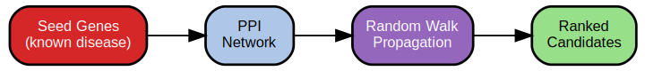
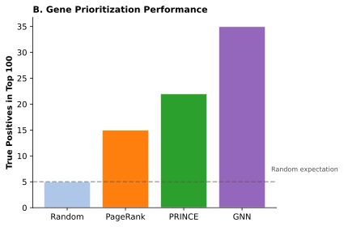


Clinical applications include rare disease diagnosis, where patient exome sequencing identifies hundreds of candidate variants and network-based scoring helps prioritize which genes to investigate further (Chapter 28). The approach also supports drug target identification by highlighting genes whose network position and functional properties make them amenable to therapeutic modulation (Chapter 30). For rare disease diagnosis, network-based prioritization integrates with the variant filtering pipelines in ?sec-ch26-prioritization-funnel, where foundation model embeddings and network context jointly inform gene ranking.
21.4.2 Drug-Target Interaction Prediction
Identifying which proteins a drug binds is fundamental to understanding mechanism and predicting side effects. Experimental screening of drug-target pairs is expensive and incomplete; computational prediction can prioritize candidates for validation.
Drug-target interaction prediction naturally fits a graph framework. Construct a heterogeneous graph with drug nodes, protein nodes, and edges representing known interactions. Node features for proteins come from sequence foundation models; node features for drugs come from molecular encodings (fingerprints, learned representations from molecular graphs). Train a GNN to predict missing edges, learning which drug and protein features, combined with network context, indicate likely binding.
The foundation model integration is critical here. Protein embeddings from ESM capture binding pocket characteristics, domain structure, and evolutionary constraint that influence druggability. The graph structure provides context: if a drug binds protein A, and protein A participates in complex with protein B, then the drug may also affect protein B’s function. Multi-relational GNNs can learn different propagation patterns for different edge types (physical binding versus pathway membership versus sequence similarity), improving prediction accuracy.
This application connects to broader drug discovery workflows (Chapter 30), where target identification is one component of a multi-stage pipeline. GNN-based predictions provide hypotheses for experimental validation, accelerating the search for novel therapeutic targets.
A pharmaceutical company wants to predict off-target effects of a new kinase inhibitor. They have: - The drug’s binding affinity to 50 kinases (experimentally measured) - A kinase family tree based on sequence similarity - ESM-2 embeddings for all human kinases
How would you structure this as a graph learning problem? What would be your nodes, edges, and prediction target? What might the model learn that simple sequence similarity would miss?
21.4.3 Knowledge Graph Reasoning and Drug Repurposing
Drug repurposing seeks new therapeutic applications for existing compounds, exploiting the observation that drugs often affect multiple targets and pathways beyond their original indication. Knowledge graphs provide a natural framework for repurposing by encoding the relationships through which a drug’s effects might propagate to new disease contexts.
The repurposing problem can be framed as link prediction in a heterogeneous graph: given a knowledge graph with drugs, diseases, genes, and pathways as nodes, predict missing drug-treats-disease edges. Unlike direct drug-target prediction, this task requires reasoning across multiple relationship types. A candidate repurposing hypothesis might involve a chain such as: drug D binds protein P1, P1 regulates pathway W, pathway W is dysregulated in disease X, therefore D may treat X. Graph neural networks designed for heterogeneous graphs learn to aggregate evidence across such chains, weighting different metapaths (sequences of edge types) according to their predictive reliability. The drug repurposing applications that exploit this reasoning are detailed in ?sec-ch27-repurposing.
Foundation model embeddings strengthen knowledge graph reasoning in several ways. For gene and protein nodes, ESM embeddings encode functional properties that influence druggability and pathway membership. For disease nodes, embeddings derived from clinical text or phenotype ontologies capture symptom patterns and comorbidity relationships. For drug nodes, molecular representations from chemical language models or graph neural networks over molecular structure encode binding properties and pharmacokinetics. These rich node features allow the GNN to assess not just whether a path exists but whether the entities along that path have compatible functional characteristics.
Empirical results demonstrate the value of this integration. Models combining knowledge graph structure with foundation model embeddings outperform both topology-only approaches (which ignore node semantics) and embedding-only approaches (which ignore relational structure) on standard drug repurposing benchmarks (biomedkg2025?; dreamgnn2025?). The improvement is particularly pronounced for drugs and diseases with sparse direct evidence, where multi-hop reasoning through well-characterized intermediate entities provides the primary signal.
Clinical translation of knowledge graph predictions requires careful interpretation. A high-scoring drug-disease prediction indicates that multiple lines of computational evidence converge, not that efficacy has been established. The paths contributing to predictions provide mechanistic hypotheses that can guide experimental validation: if the model relies heavily on a drug-protein-pathway-disease chain, that pathway becomes a candidate biomarker for patient selection or treatment response monitoring. Several repurposing candidates identified through knowledge graph methods have entered clinical trials, though the approach remains most valuable for hypothesis generation rather than definitive target validation (stebbing2020mechanism?; richardson2020baricitinib?).
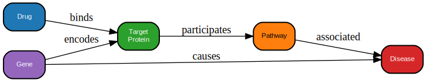
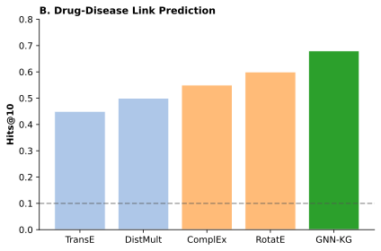


21.4.4 Pathway and Module Analysis
Individual genes rarely act alone; biological function emerges from coordinated activity of gene sets organized into pathways and functional modules. Patient-specific pathway analysis identifies which modules show coordinated dysregulation, providing mechanistic insight beyond single-gene associations.
GNNs enable pathway analysis that respects network structure rather than treating gene sets as independent members. By propagating patient-specific expression or mutation signals through pathway graphs, models can identify which subnetworks show coherent perturbation. This differs from classical gene set enrichment, which tests for overrepresentation without considering internal pathway topology.
Foundation model features strengthen pathway analysis by providing functional context for each gene. A gene with features indicating chromatin regulation may contribute to pathway dysfunction through different mechanisms than one with features indicating membrane signaling. The GNN learns to weight these contributions based on network position and functional annotation, identifying pathway perturbations that purely topological or purely gene-set methods miss.
21.4.5 Cell Type and State Annotation
Single-cell foundation models generate rich representations of individual cells (Chapter 19), but many biological questions involve relationships between cells: which cells communicate, how spatial neighborhoods influence behavior, which cell types co-occur in disease states.
Graph neural networks over cell-cell interaction graphs enable several applications. Cell type annotation propagates labels from well-characterized cells to ambiguous ones based on expression similarity and spatial proximity. Perturbation response prediction models how signals from perturbed cells propagate to neighbors. Tissue region classification identifies coherent spatial domains (tumor, stroma, immune infiltrate) based on local cell compositions.
The foundation model integration follows the standard pattern: scGPT or similar models generate cell embeddings, spatial proximity or inferred ligand-receptor interactions define edges, and GNN message passing refines cell representations based on neighborhood context. The resulting embeddings capture both intrinsic cell state and extrinsic spatial/communicative context, enabling predictions that purely expression-based or purely spatial models cannot make.
21.5 Practical Considerations
Deploying graph neural networks on biological data requires navigating choices that profoundly affect model behavior. Graph construction determines what relationships the model can exploit. Scalability strategies determine whether training is feasible on large networks. Robustness techniques determine whether predictions generalize beyond well-characterized network regions. Interpretation methods determine whether outputs provide actionable biological insight. The following subsections address each consideration in turn.
21.5.1 Graph Construction Quality
The impact of graph construction choices cannot be overstated. A GNN can only learn from relationships encoded in its input graph; missing edges prevent information flow, spurious edges introduce noise, and biased edge sets propagate ascertainment artifacts.
Source selection involves tradeoffs between precision and completeness. Curated databases like BioGRID provide high-confidence interactions but miss most true relationships. Computational predictions from STRING or co-expression analysis are more comprehensive but noisier. The appropriate choice depends on the downstream task: high-precision networks may be preferable when false positives are costly, while high-recall networks enable discovery of novel biology at the risk of chasing artifacts.
Thresholding decisions determine network density. Confidence scores or distance metrics allow continuous edge weights, but many GNN implementations require discrete edges or work better with relatively sparse graphs. Cross-validation over threshold values or principled selection criteria (target edge density, ensure graph connectivity) help navigate this choice.
For heterogeneous graphs, schema design (which node types exist, which edge types connect them) encodes strong assumptions about relevant biology. A knowledge graph that separates genes, transcripts, and proteins as distinct node types enables fine-grained reasoning but requires more training data than a simpler gene-only representation.
Before training a GNN, verify your graph construction:
Mistakes in graph construction often matter more than model architecture choices.
21.5.2 Scalability and Mini-Batching
Biological graphs range from thousands of nodes (a single-patient cell graph) to millions (a comprehensive knowledge graph or large spatial transcriptomics dataset). Full-batch training, where the entire graph is processed simultaneously, becomes infeasible at scale due to memory constraints.
Mini-batching strategies partition computation into manageable pieces. Neighborhood sampling (GraphSAGE-style) restricts message passing to a fixed sample of neighbors per node, enabling node-level mini-batches. Subgraph sampling trains on induced subgraphs corresponding to meaningful units (individual pathways, tissue regions, patient subsets). Cluster-based training partitions the graph into communities, processes each independently, and handles cross-cluster edges in a second pass.
For foundation model integration, computational cost compounds: generating embeddings for millions of proteins or cells may itself be expensive. Pre-computing and caching embeddings is often practical, decoupling the foundation model forward pass from GNN training. When embeddings must be computed on-the-fly (for dynamic features or joint fine-tuning), careful batching and gradient checkpointing become essential.
21.5.3 Robustness to Noise and Missingness
All biological networks contain errors. Experimental methods for detecting interactions have false positive and false negative rates; computational predictions rely on imperfect proxies; even curated databases contain mistakes. GNNs must tolerate this noise to be practically useful.
Randomly masking edges during training forces the model to avoid relying on any single interaction. This edge dropout improves robustness to missing or incorrect edges and serves as a form of regularization. Similarly, masking node features or entire nodes through node dropout prevents overfitting to well-connected hubs.
Ensemble methods train multiple GNNs on different network subsamples or with different random initializations, aggregating predictions to reduce variance from network noise. Bayesian GNNs provide uncertainty estimates that flag low-confidence predictions for manual review (Chapter 23).
Evaluation should explicitly assess robustness by testing on held-out edges, nodes from poorly characterized network regions, or networks constructed from different data sources than training. A model that performs well only on hub genes or well-characterized interactions may fail in precisely the scenarios where computational prediction is most needed (Chapter 12).
You have trained a GNN for disease gene prioritization and achieved 0.85 AUC on your test set. Before celebrating, what additional evaluations should you perform to assess whether this performance is meaningful?
Consider: 1. How would you check if the model is simply learning node degree? 2. How would you assess performance on understudied genes? 3. How would you test generalization to a new disease not in training?
Take a moment to think through each question before reading on.
21.5.4 Interpretation and Validation
A key advantage of graph models is interpretability: the graph structure itself provides a scaffold for understanding predictions (Chapter 25). Several techniques extract biological insight from trained GNNs.
Attention weights in GAT and graph transformer models indicate which neighbors most influenced each node’s prediction. Aggregating attention across predictions can highlight critical edges or subgraphs, suggesting which interactions drive model behavior. For cases where some neighbors matter more than others, this attention weight analysis reveals learned priorities.
Computing how predictions change with respect to node or edge features identifies which parts of the input most affect outputs. Gradient-based attribution methods such as integrated gradients provide smoother, more reliable attributions than raw gradients.
Systematically removing edges, masking nodes, or perturbing features and observing prediction changes reveals which graph elements are necessary for specific predictions. This counterfactual analysis can identify model vulnerabilities and generate testable hypotheses about which interactions are essential.
Projecting learned node representations into two dimensions using Uniform Manifold Approximation and Projection (UMAP) or t-distributed stochastic neighbor embedding (t-SNE) reveals clusters that may correspond to functional categories, cell types, or disease subtypes. Comparing embedding visualizations across conditions identifies network regions that show context-specific changes.
Interpretation is not an afterthought but a central goal. The most impactful applications are those where GNN predictions generate testable hypotheses about biological mechanism, ultimately validated by experiment. Attention weights highlighting a regulatory edge or gradient attribution implicating a signaling pathway should prompt follow-up experiments, not immediate clinical action.
21.6 Limitations and Open Challenges
Graph neural networks inherit the biases and limitations of their input networks. Network incompleteness means critical relationships may be absent. Ascertainment bias means well-studied genes dominate predictions. Correlational structure may not reflect causal mechanisms. These limitations do not invalidate the approach but constrain its appropriate use and interpretation.
21.6.1 Study Bias Problem
Network-based methods inherit the biases of their input networks. Well-studied genes appear as hubs; poorly characterized genes are peripheral or disconnected. GNNs trained on such networks learn to propagate signals toward well-characterized genes, effectively recapitulating rather than extending existing knowledge.
This creates particular problems for disease gene discovery, where the goal is often to identify previously unrecognized genes. A model that consistently ranks known disease genes highly may simply be exploiting their network prominence rather than learning generalizable disease biology. Careful evaluation on temporal holdouts (genes characterized after training data was assembled) or stratified by network degree can reveal whether models truly generalize (Chapter 12). The systematic approaches for detecting and quantifying such confounding patterns are detailed in ?sec-ch22-detection.
Mitigation strategies include degree-corrected training objectives, explicit modeling of ascertainment bias, or alternative network constructions that reduce dependence on historical research focus. None fully solves the problem, which reflects fundamental data limitations rather than algorithmic shortcomings.
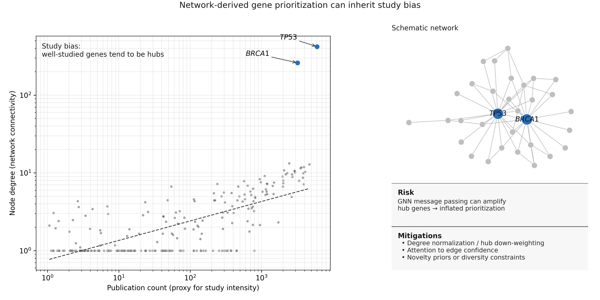
21.6.2 Causality Versus Association
Network edges typically represent associations (two proteins bind, two genes correlate) rather than causal relationships (perturbing gene A changes gene B). GNNs learn to exploit correlational patterns, which may not correspond to causal mechanisms.
For applications like drug target identification, the causality limitation matters enormously. A gene that correlates with disease through confounding may be a poor target despite high network-based prioritization scores. A GNN might learn that genes in the “inflammation” module are associated with autoimmune disease, but this does not mean that targeting any gene in that module will be therapeutic. Experimental validation remains essential before clinical translation.
Integrating causal inference methods with graph learning is an active research area, but current GNN applications should be interpreted as identifying associations worthy of experimental follow-up rather than establishing causal relationships.
21.6.3 Negative Data and Class Imbalance
Most biological network datasets encode only positive relationships: known interactions, confirmed regulatory edges, documented associations. The absence of an edge may indicate true non-interaction or simply lack of evidence. This creates severe class imbalance for edge prediction tasks and makes negative sampling strategies critical (Chapter 12).
Random negative sampling (assuming absent edges represent non-interactions) is common but biologically unrealistic. More sophisticated approaches sample negatives with matched properties (same degree distribution, similar node features) to create harder and more meaningful contrasts. Evaluation should report performance separately on different negative sampling schemes to assess whether models generalize beyond easily discriminated negatives (Chapter 11).
21.6.4 Distribution Shift
A GNN trained on one biological network (human PPI from STRING) may not transfer to another (mouse regulatory network, patient-specific spatial graph). Foundation model embeddings help by providing transferable features, but network structure differences can still break performance.
Applying models across species is particularly challenging: network topology, edge type distributions, and gene function may all differ between organisms. Cross-tissue or cross-disease transfer poses similar challenges. Explicit domain adaptation methods, multi-task training across related networks, or foundation model fine-tuning on target domains can help but add complexity (Chapter 9).
21.7 Sequence Encodes, Structure Connects
Graph neural networks operate at a complementary level of abstraction to sequence-based foundation models. Foundation models learn rich representations of biological entities from sequence data; graph neural networks learn to reason about relationships between those entities. Combining them follows a natural pattern: generate embeddings with foundation models, then refine them through message passing over graph structure. This integration yields capabilities that neither component achieves alone, propagating information across protein interaction networks, regulatory pathways, and spatial neighborhoods in ways that sequence models cannot represent.
The central insight is that biological knowledge exists at multiple scales. Sequence encodes what individual genes and proteins can do; networks encode how they interact to produce cellular function. GNNs translate the relational structure of biological networks into learnable inductive biases, enabling disease gene prioritization through network propagation, drug target prediction through pathway context, and spatial analysis through tissue graphs. The improvements over sequence-only approaches are consistent across applications, demonstrating that relational context adds genuine information beyond what sequence representations capture.
Yet network structure carries its own biases. Protein interaction databases are enriched for well-studied genes and disease-relevant pathways; less-characterized genes have fewer annotated interactions regardless of their biological importance. Correlation between genes does not imply regulatory relationship. Class imbalance between known disease genes and the genome-wide background reflects research history as much as biology. These biases propagate through GNN predictions, creating systematic patterns in what the models emphasize and what they miss. The multi-omics integration examined in Chapter 22 extends graph-based reasoning to additional modalities. Clinical applications in Chapter 27 leverage network-derived features for risk stratification, while Chapter 28 applies network propagation to gene prioritization workflows. Both depend on understanding where network-derived predictions are trustworthy and where they inherit the limitations of their inputs, challenges that the uncertainty quantification methods in Section 23.4 help address.
Core Concepts:
- Graph neural networks consume foundation model embeddings, not replace them. FMs provide rich node features; GNNs add relational reasoning.
- Message passing iteratively updates node representations based on neighbor information, with each layer extending the receptive field by one hop.
- Over-smoothing limits GNN depth; most practical models use 2-4 layers.
Architecture Choices:
| Need | Choose |
|---|---|
| Simple baseline | GCN with frozen FM embeddings |
| Large graphs | GraphSAGE with neighborhood sampling |
| Variable edge importance | GAT for attention-weighted aggregation |
| Long-range dependencies | Graph transformers (but higher compute) |
Key Applications:
- Disease gene prioritization: Propagate disease labels through PPI networks
- Drug-target prediction: Heterogeneous graphs with drug and protein nodes
- Drug repurposing: Multi-hop reasoning through knowledge graphs
- Spatial analysis: Cell graphs with FM embeddings as node features
Critical Limitations to Remember:
- Networks inherit study bias (well-studied genes are over-connected)
- Edges represent association, not causation
- Missing edges block information flow
- Performance on hub genes may not generalize to understudied genes
Connection to Later Chapters:
- Chapter 22: Extending GNNs to multi-modal data
- Chapter 23: Uncertainty quantification for network predictions
- Chapter 25: Interpreting what GNNs learn
- Chapter 27: Clinical applications of network features
- Chapter 28: Network-based gene prioritization for diagnosis